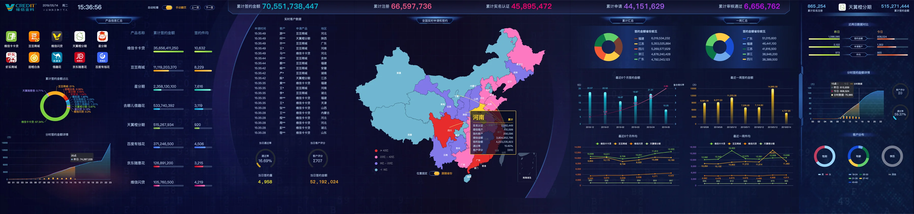
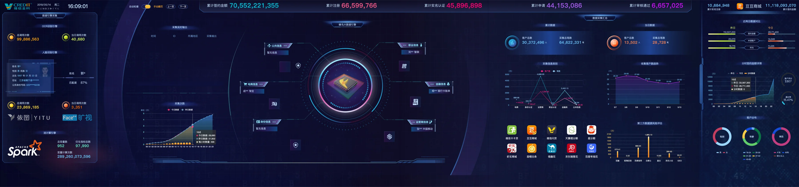
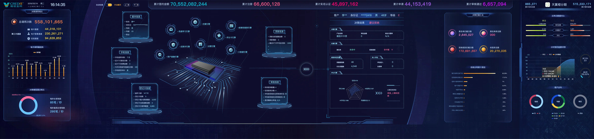
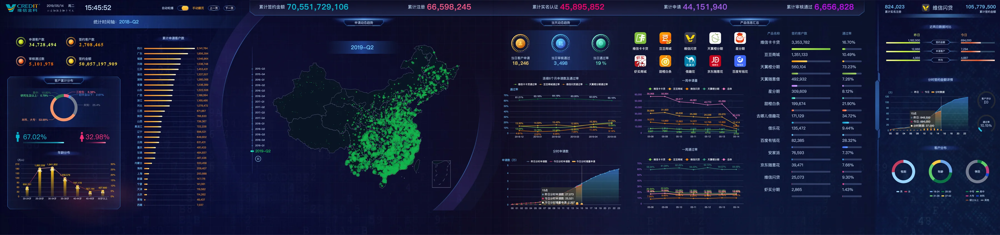
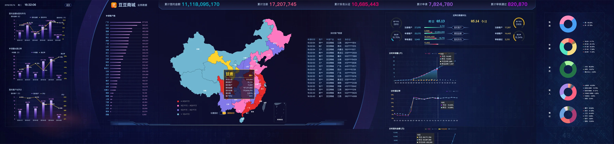
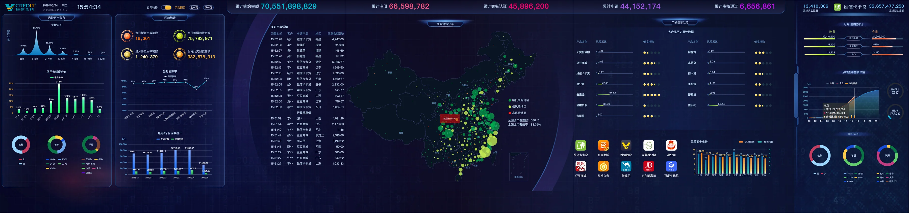
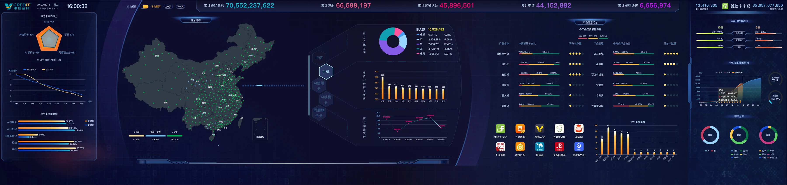

指标分层
顶部固定展示全局指标，主视区承载当前任务，侧栏补充趋势与构成。
WEIXIN FINANCE / ENTERPRISE DASHBOARD
面向金融业务的实时数据监测与管理驾驶舱。将签约、客户申请、数据采集、风险识别与评分分布整合为一套可扫读、可追踪、可决策的数据系统。

系统同时承载管理概览与专项分析两类任务。设计通过「全局 KPI—中央主视图—两侧分析面板」的稳定骨架，在不同业务页中保持操作逻辑一致，让使用者快速建立信息方位感。
顶部固定展示全局指标，主视区承载当前任务，侧栏补充趋势与构成。
通过高对比数值、色彩编码和实时反馈，让异常和变化优先被看见。
七类数据任务共用同一视觉语法，降低跨页切换时的认知成本。
页面被组织为三个层次：总览、业务运行与风险洞察。
以中国地图为主视觉焦点，同屏组织签约、注册、实名认证、客户申请和产品趋势，用于管理层快速掌握整体运行状态。
以中央节点图呈现多源数据的采集与处理关系，左侧跟踪 OCR、人脸识别与计算引擎，右侧对比数据量和产品贡献。

将客户信息、手机信息、贷记卡信息与决策结果串联起来，同屏呈现引擎效率、拒绝原因与评分结果。

从季度、地区、人群和产品四个维度观察客户申请，为运营团队提供趋势判断与渠道对比。

聚焦具体金融产品，把签约金额、申请客户、地域表现、客群构成和分期趋势收敛到单一分析视图中。

以风险地图作为异常定位入口，结合回款、征信、产品风险评级与客户分布，帮助风控人员从区域下钻到具体业务。

把综合评分、地域分布、评分段和产品评级放在同一视图中，用于识别客户质量结构与不同产品的风险差异。
